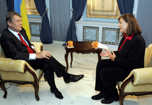

BBC Talking point with Yushchenko
16 жовтня Бі-Бі-Сі показало інтерв'ю з Президентом Ющенком В.А. в циклі Talking Point. Файли запису цієї передачі можна звантажити тут:- Файл у форматі MPEG1
 — 410M, 352x240, 29.97 fps
— 410M, 352x240, 29.97 fps
- Звуковий файл у форматі MP3 — 15M, 96 kbps
- Video AVI — 267M, 640x352, 29.97 fps, висока якість (Hi quality)
Програма транслювалася за японським часом 17:30 - 18:00 по 252 каналу SkyPerfecTV? BBC.
Інформація про інтерв'ю з веб майданчику Президента
http://www.president.gov.uaPresident interviewed by BBC Talking Point
|
 |
In his interview with BBC Talking Point, a program where all viewers are encouraged to send online questions for prominent figures, Victor Yushchenko spoke about the current political situation in Ukraine, his motivation to dismiss the government, next year’s parliamentary elections and other issues. |
The BBC will broadcast the interview on October 16, 10:30AM, and wire it twice on October 17. Its printable version will appear on the Talking Point homepage.
Створений : dmytro.
останні зміни: Неділя 16 з October, 2005 22:30:23 JST dmytro.
Оригінал документу знаходиться на http://tiki/kraiany/tiki/tiki-index.php?page=BBC%20Talking%20point%20with%20Yushchenko